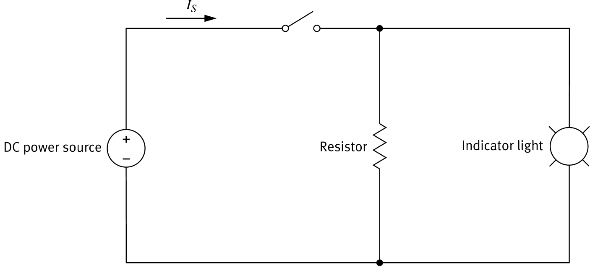
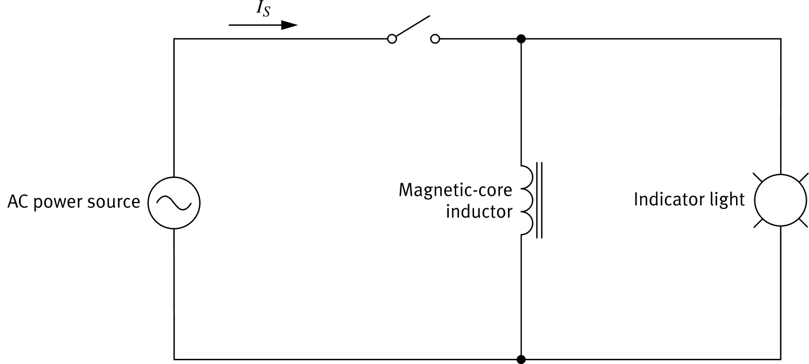
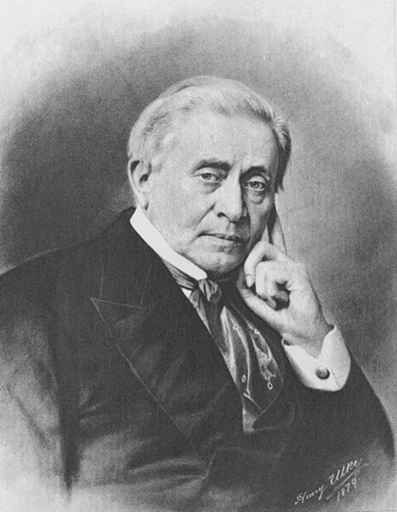
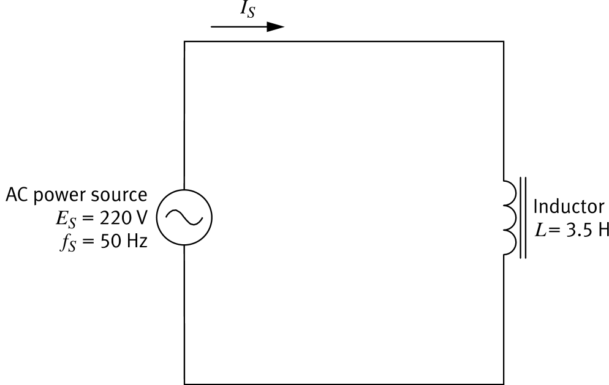
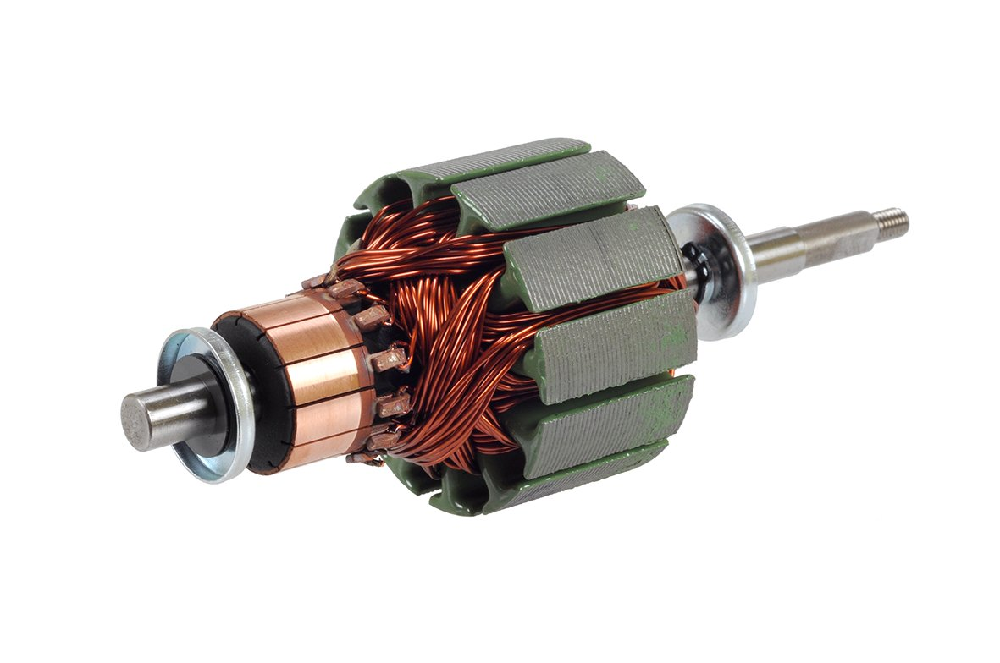
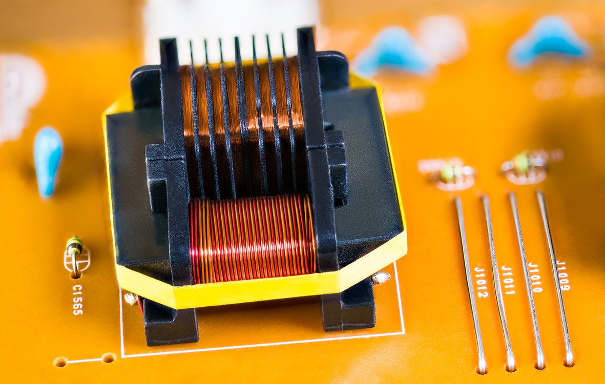

// Magnetic fields · Induced voltage · Inductance · Inductive reactance
In the DC Circuit Fundamentals course you saw that current in a wire produces a magnetic field, and that winding the wire into a coil around an iron core makes that field much stronger. This coil is the basis of solenoids and motors.
A coil of wire used in an ac circuit is called an inductor. Like a capacitor, almost none of the power supplied to it does immediate work. Its two main jobs are to produce a magnetic field and to oppose current changes in the circuit.

This circuit has an ordinary resistor in parallel with the indicator light.

The fundamental characteristic of an inductor is its inductance: a measure of its ability to store energy in its magnetic field. The higher the inductance, the more energy it can store.
Inductance is measured in henries (H), named after Joseph Henry, who discovered self-inductance.

An ac inductor opposes current by storing and releasing magnetic energy. That opposition is called inductive reactance, measured in ohms (Ω), and it depends on the inductance and the source frequency.

Equivalent inductance is found exactly as for resistors. You can then convert it to an equivalent reactance, or combine the individual reactances directly. This is the opposite of how capacitors combine.

